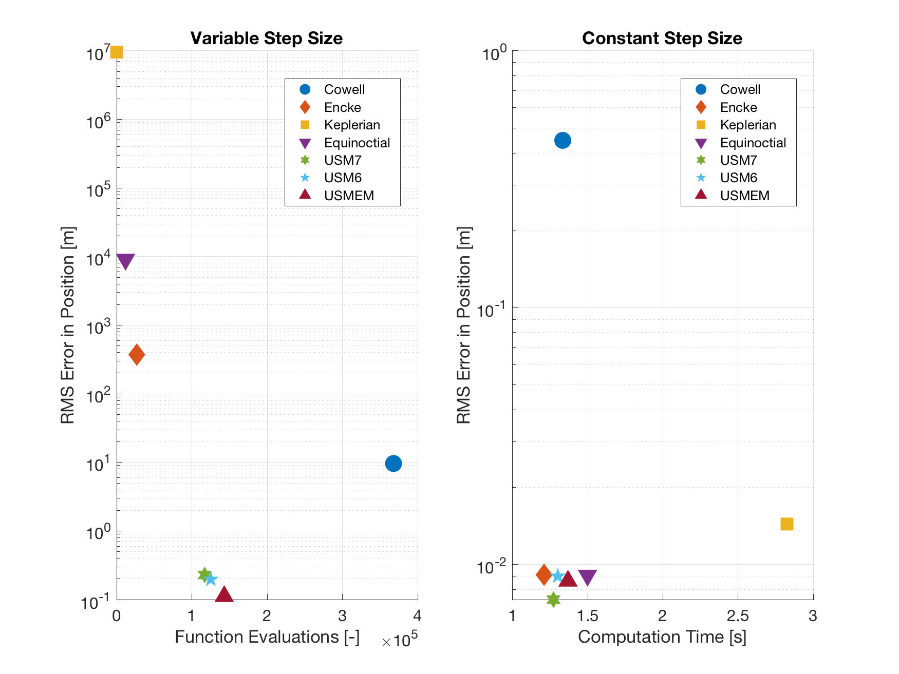

4. Comparison of Propagator Types¶
As was introduced in Propagator Settings: Basics, in Tudat one can choose from seven different propagation types, which are:
- Cowell (Cartesian coordinates)
- Encke (Cartesian coordinates)
- Gauss planetary equations in Keplerian elements
- Gauss planetary equations in modified equinoctial elements
- Unified state model with quaternions
- Unified state model with modifed Rodrigues parameters
- Unified state model with exponential map
With this example application, we propagate a quasi-circular orbit around Earth with each of the propagators above for 10 days, and examine their performance (in terms of RMS error w.r.t. a more accurate reference, time and function evaluations). The comparison is done for both a variable and a constant step-size integration method.
4.1. Initial Conditions¶
The initial conditions (expressed in Keplerian elements) are defined in the table below, and the accelerations are listed thereafter. Note that you can also choose to propagate a simple Keplerian orbit, i.e., an orbit with no accelerations, other than the point mass gravity of the Earth. This is done by setting the variable keplerOrbit to true.
Keplerian Element Value Unit Semi-major Axis 6778.136 km Eccentricity 0.003 – Inclination 93.0 deg Right Ascension of Ascending Node 158.7 deg Argument of Periapsis 23.4 deg True Anomaly 0.0 deg
- Spherical harmonics gravity of the Earth (based on model
ggm02s) with maximum degree and order 4- Third body perturbations (modelled as point mass gravity) of Sun and Moon
- Aerodynamic acceleration based on the standard Earth exponential atmosphere model
- Solar radiation pressure
You can find more details on the spacecraft (such as mass and aerodynamic properties) and on the simulation in the application file itself.
4.2. Integrator Settings¶
In Integrator Settings you learned about the format required for setting up an integrator, via the IntegratorSettings class. In this application we will focus only on two of the available integrators in Tudat.
The first one is a variable step-size integrator. As you may already know, these types of integrators adapt the time step-size for the next integration step, by approximating the local and total integration error. Here we will only use the Runge-Kutta integrators, but Tudat also offers more other integrators and you should always make a trade-off on itegrators based on you mission requirements (for this example, we will only set up a simulation to make a trade-off in propagator type). The coefficient sets that use are:
rungeKuttaFehlberg56: used for the nominal orbit simulationrungeKuttaFehlberg78: used for the computation of the reference trajectory
The following settings are used as default, but you can always change them by modifiying the value of the variable (which you can find at the beginning of the file).
Integrator Settings Value Unit Variable Name Relative Tolerances \(10^{-12}\) – integrationRelativeToleranceAbsolute Tolerances \(10^{-12}\) – integrationAbsoluteToleranceReference Tolerances \(10^{-15}\) – integrationReferenceToleranceConstant Time Step 5.0 s integrationConstantTimeStepSize
The values above are rather arbitrary. As mentioned above for the integrator settings, the choice of tolerances and time steps highly depends on the accruacy requirements and environment of you mission.
Tip
In Tudat you can also set a tolerance for each of the elements in the state vector. For instance, while using the USM7 method (see Frame/State Transformations for a brief introduction to these propagation coordinates) you may want to set a separate tolerance for the velocity and the quaternion elements of the state, since their dynamics are quite different.
For the constant step-size method, rungeKutta4 is the selected method. In the table above, you can also see the step-size chosen for this application.
4.3. Results and Analysis¶
Once you run the simulation in Tudat (select executable application_PropagatorTypesComparison), you can access the results by going to the folder SimulationOutput/PropagatorTypesComparison, you will find a text file for each of the propagator/integrator combinations. A preliminary MATLAB file for loading and plotting the results is available in MatlabScripts, under the name propagatorTypesComparison.m. You can use this file as a basis for your more in-depth analysis.
The only output of the MATLAB file is a plot, where the RMS error in position is plotted for each propagator and integrator, as a function of function evaluations for the variable step-size integrator and as a function of time for the constant step-size integrator. Below you see the figures that are output for when a Keplerian orbit is used, and for when the full acceleration list introduced earlier is added.
-
Un-perturbed Orbit - 
-
Perturbed Orbit 
By looking at the figures above, and analyzing the results in other manners, you will be able to draw a conclusion on which propagator is most suitable for your application.